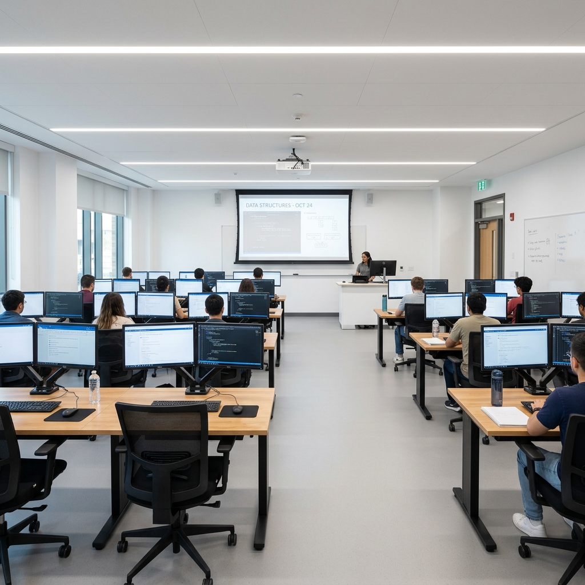
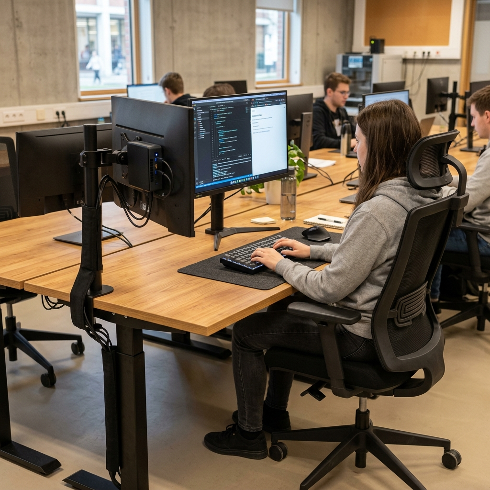
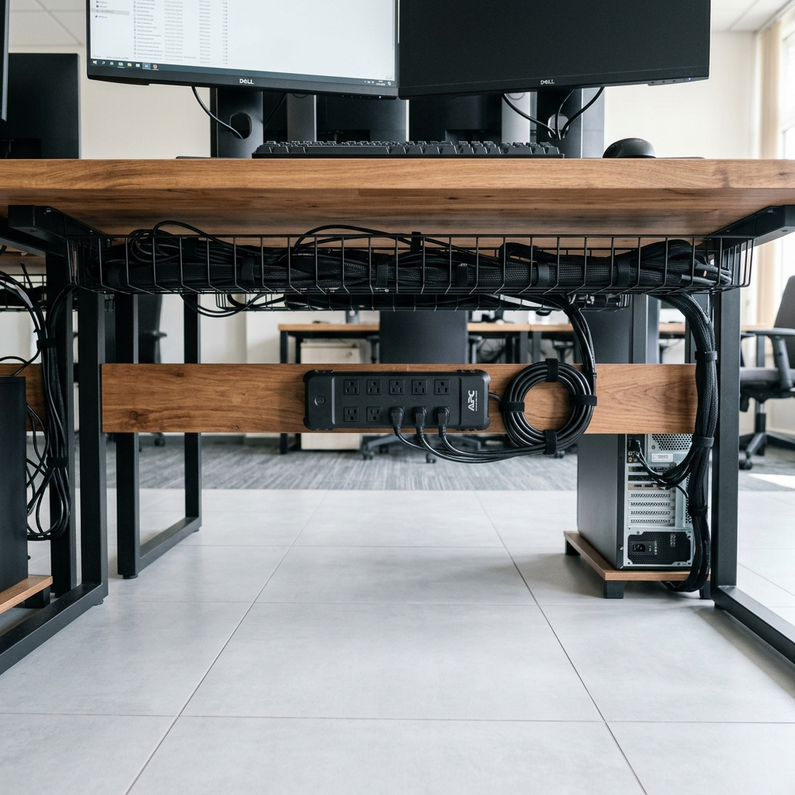
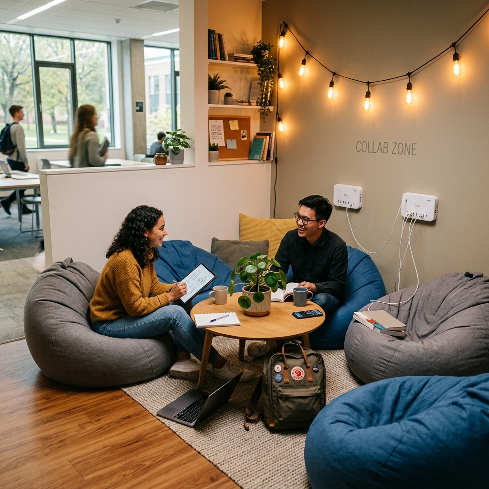
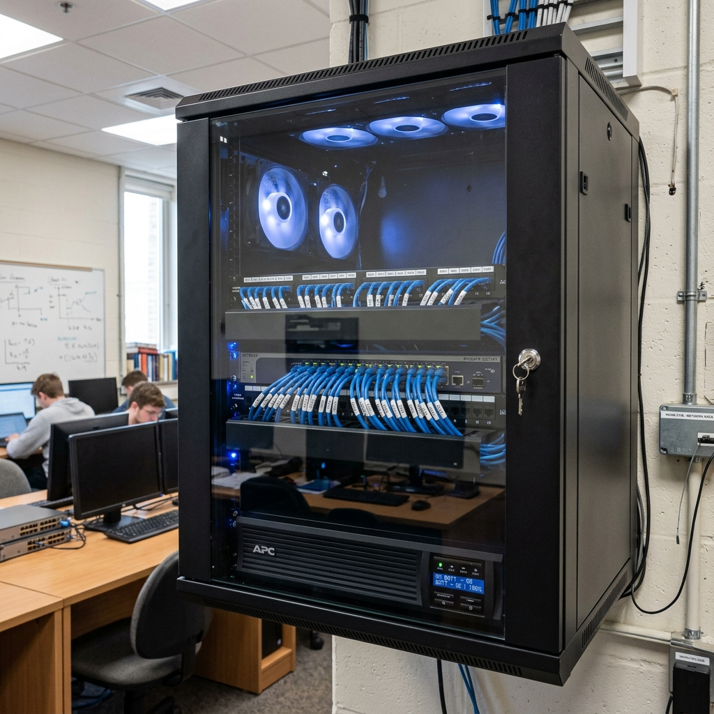

Галерея проектных решений
Нейросетевые рендеры позволяют наглядно продемонстрировать, как изменятся условия работы, комфорт и безопасность после реализации нашего проекта.

Визуализация 1: Общий вид обновленной аудитории
Назначение: Показать общую рассадку, просторность проходов и свет.
Промпт: A photo of a modern university computer classroom with clean wooden desks, ergonomic black chairs with back support, dual monitors on stands, bright LED ceiling lighting, fresh white walls, and a projection screen at the front. The room looks neat, spacious, and well-ventilated, with no hanging wires.
Что доказывает: Проектная рассадка обеспечивает комфортную дистанцию между студентами и широкие безопасные проходы для эвакуации.

Визуализация 2: Эргономичное рабочее место студента
Назначение: Показать правильное расположение монитора, неттопа и ортопедического кресла.
Промпт: A photo of a single modern ergonomic workspace in a university IT lab. A clean wooden desk has a height-adjustable stand holding a 24-inch IPS monitor. A compact mini-PC is attached to the back of the monitor. There is a sleek mechanical keyboard, an ergonomic mouse, and a comfortable black office chair with mesh backrest and lumbar support. Cable sleeve holds all wires neatly.
Что доказывает: IPS-монитор на уровне глаз и кресло с поддержкой поясницы полностью разгружают шею и спину студента во время работы.

Визуализация 3: Скрытая укладка кабелей под столешницей
Назначение: Показать чистоту проходов и отсутствие проводов на полу.
Промпт: A close up photo showing excellent cable management under a desk in a modern computer office or lab. Cables are bundled inside neat black mesh sleeves and routed through a horizontal wire basket tray mounted under the wooden tabletop. No wires touch the floor, leaving a clean tiled floor. A power strip is mounted off the ground.
Что доказывает: Поднятие блоков питания и кабелей в корзины исключает риски их повреждения ногами и упрощает влажную уборку.

Визуализация 4: Студенческая зона отдыха и коллаборации
Назначение: Показать пространство для отдыха в перерывах между парами.
Промпт: A photo of a modern university student rest and collaboration zone. A corner of a classroom contains comfortable gray and blue bean bags, a small wooden coffee table with a plant, charging hubs on the wall with USB ports, and warm decorative lighting. The atmosphere is cozy, inviting, and relaxing.
Что доказывает: Наличие зоны с пуфами и зарядными портами позволяет студентам расслабить спину на перемене и пообщаться в комфортной обстановке.

Визуализация 5: Коммутационный настенный узел
Назначение: Продемонстрировать аккуратность и защищенность сетевого ядра.
Промпт: A photo of a professional server and networking wall-mounted enclosure in a university computer science room. Inside, a gigabit network switch is neatly wired with blue patch cables and labels. A smart Uninterruptible Power Supply (UPS) is located at the bottom. The glass door of the enclosure is closed and locked. Fans inside are spinning with subtle blue LED light indicators.
Что доказывает: Размещение сетевого оборудования в закрытом металлическом шкафу полностью защищает его от внешних факторов и несанкционированного доступа.